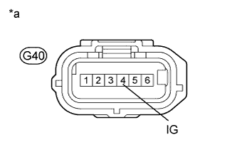

DTC C1381 Acceleration Sensor Power Supply Voltage Malfunction |
| DTC Code | DTC Detection Condition | Trouble Area |
| C1381 | At a vehicle speed of more than 3 km/h (2 mph), the acceleration sensor power source malfunction signal is received for 10 seconds or more. |
|
| 1.CHECK DTC (CAN COMMUNICATION SYSTEM) |
Check for DTCs (Click here).
| Result | Proceed to |
| CAN DTC is not output | A |
| CAN DTC is output | B |
|
| ||||
| A | |
| 2.CHECK TERMINAL VOLTAGE (IG) |
Disconnect the G40 yaw rate and acceleration sensor connector.
|  |
Measure the voltage according to the value(s) in the table below.
| Tester Connection | Switch Condition | Specified Condition |
| G40-4 (IG) - Body ground | Engine switch on (IG) | 11 to 14 V |
| *a | Front view of wire harness connector (to Yaw Rate and Acceleration Sensor) |
|
| ||||
| OK | |
| 3.CHECK HARNESS AND CONNECTOR (GND TERMINAL) |
Disconnect the G40 yaw rate and acceleration sensor connector.
Measure the resistance according to the value(s) in the table below.
| Tester Connection | Condition | Specified Condition |
| G40-1 (GND) - Body ground | Always | Below 1 Ω |
|
| ||||
| OK | |
| 4.RECONFIRM DTC |
Reconnect the yaw rate and acceleration sensor connector.
Clear the DTCs (Click here).
Start the engine.
Perform a road test.
Check if the same DTC is output (Click here).
| Result | Proceed to |
| DTC C1381 is not output | A |
| DTC C1381 is output | B |
|
| ||||
| A | ||
| ||